Übersicht
-Interpreter und Compiler
-Hohe und niedrige Programmiersprachen
-Grundelemente von Computersprachen
Was ist Computersprache?


Ganz tief unten arbeiten Computer mit Nullen und Einsen (Maschinensprache bzw. Maschinencode/ Binärcode). Diese Computersprache ist für ein Computer direkt lesbar und wird ausgeführt. Es handelt es sich um Maschinensprache oder auch Maschinencode oder Binärcode.
Warum null und Eins?
null steht für Strom aus und 1 steht für Strom an. Verschiedene Kombinationen von nullen und einsen sorgen vereinfacht gesagt dafür, dass die Hardware verschiedene Dinge tut. Maschinensprache ist aber für den Menschen schlecht lesbar und deshalb wurden menschenlesbare Computersprachen wie Programmiersprachen, Datenbanksprachen und Beschreibungssprachen entwickelt. Diese Sprachen sind in Wörtern der menschlichen Sprache (meist in English) geschrieben und halten sich dabei festen, einheitlichen und klar definierten Regeln.
Der vom Entwickler formulierte Text nennt man Quelltext. Dieser Quelltext kann jedoch nicht vom Computer gelesen werden. Also muss es dazwischen immer Programme geben, die die menschenlesbare Computersprache in Maschinensprache übersetzen, damit der Computer etwas damit anfangen kann. Hier gibt es 2 Varianten: Entweder durch sogenannte Interpreter oder durch Compiler.
Interpreter und Compiler
Interpreter
Ein Interpreter verarbeitet den Quellcode eines Projekts zur Laufzeit, es wird also direkt ausgeführt. Dazu geht der Interpreter Zeile für Zeile vor: Eine Anweisung wird eingelesen, analysiert und sofort ausgeführt. Dann geht es mit der nächsten Anweisung weiter, bis schließlich das Ende des Programms erreicht ist; oder bis ein Fehler auftritt. Aber da die Fehler erst zur Laufzeit erkannt werden, können sie schnell übersehen werden.
Compiler
Ein Compiler wandelt den Quelltext in einer ausführbaren Maschinencodedatei um. Die im Quelltext formulierten Anweisungen werden vollständig übersetzt, bevor das Programm ausgeführt wird. Dazu wird für jedes Betriebssystem ein eigener Compiler benötigt. Um das Programm unter Windows zum Beispiel laufen zu lassen, muss das Programm zuvor unter Windows über ein entsprechenden Compiler kompiliert werden.
Ein Vorteil ist, dass durch den zusätzlichen Kompilierungsschritt Fehler schneller erkannt werden.
Zwischensprachen
Es gibt einige Sprachen, bei denen sowohl Compiler als auch Interpreter zu Einsatz kommen. Der Quelltext wird dabei als erstes in einen sogenannten Bytecode kompiliert, eine Art Zwischencode. Dieser Code braucht dann einen Interpreter, um ausgeführt werden zu können.
Hier ist eine Liste von Programmiersprachen und ob diese Sprachen kompiliert, interpretiert oder beides sind:
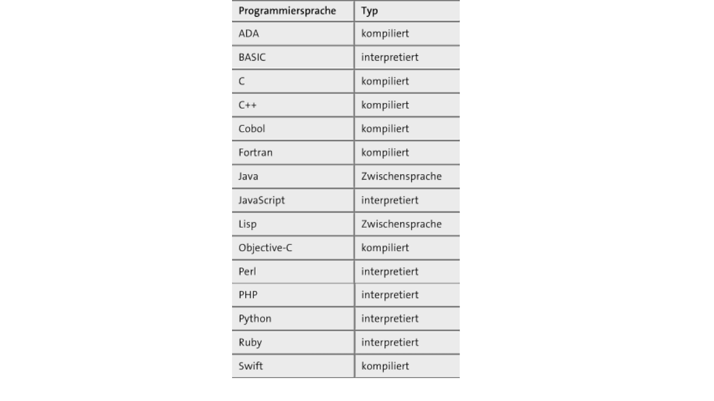Hohe und niedrige Programmiersprachen
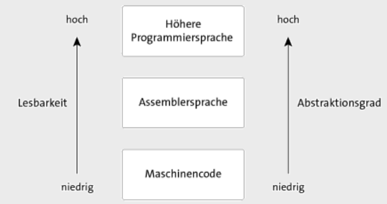Und andersherum
Grundelemente von Computersprachen
Betrachtet man die Computersprachen, so gibt einige Gemeinsamkeiten. Unterschiede findet man selten, jedoch spielt das Anwendungsgebiet eine wichtige Rolle. Nur wenige Sprachen sehen komplett anders aus. Grundelemente,die bei so gut wie jeder Programmiersprache enthalten ist, sind:
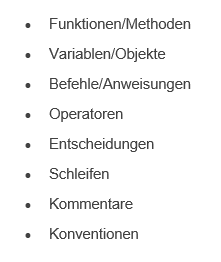
Variablen und Objekte
Variablen und Objekte speichern vereinfacht gesagt bestimmte Werte. Durch Funktionen, Befehle/Anweißungen, Operatoren und Schleifen können die Werte verändert werden, neue Werte initialisiert werden und vieles Weitere kann mit mit Variablen und Objekten geschehen. Mit den gespeicherten Wert einer Variable werden Entscheidungen(if-Abfagen o. Ä.) beispielsweiße getroffen.
Schleifen
Schleifen wiederholen bestimmten Quelltext(sogenannter Schleifenrumpf oder Schleifenkörper ). Dieser Text wird solange aufgerufen, bis die Schleifenbedingung ungültig ist. Endlosschleifen sind Schleifen, deren Bedingung immer wahr ist.
Konventionen und Kommentare
Es muss zum Einen klar vom Computer beziehungsweise dem Prozessor verstanden werden, welche Befehle vorliegen. Doch auch andere Menschen müssen den Code lesen und verstehen können. Aus diesem Grund ist es wichtig sich an vorliegende und grundsätzliche Konventionen zu halten, Kommentare zu schreiben und somit einen einfachen Zugang zu schaffen.
Definition von Konvention und Kommentar:
Konvention: ist eine (nicht notwendig festgeschriebene) Regel, die von einer Gruppe von Menschen aufgrund eines beschlossenen Konsenses eingehalten wird.
Kommentare: dienen zum verstehen des Quelltextes. Sie bewirken nichts auf geschriebene Algorhythmen, sondern erklären diese.
Wir haben uns einen groben Überblick verschaffen, was eine Computersprache ist und ausmacht. Nun schauen wir uns einzelne Programmiersprachen an, und in welchen Anwendungsgebieten sie benutzt werden.
Überblick zu den einzelnen Programmiersprachen
 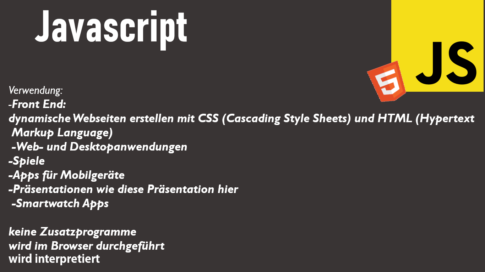
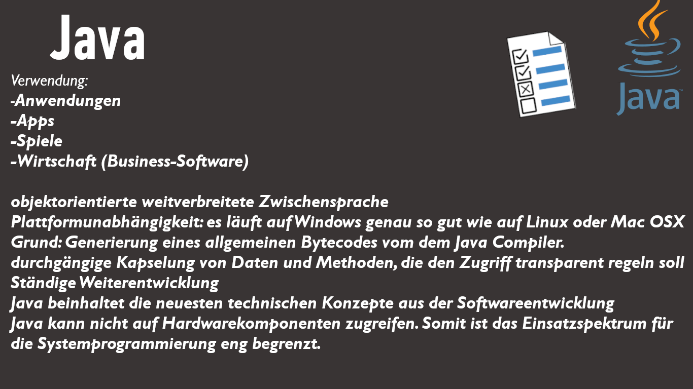
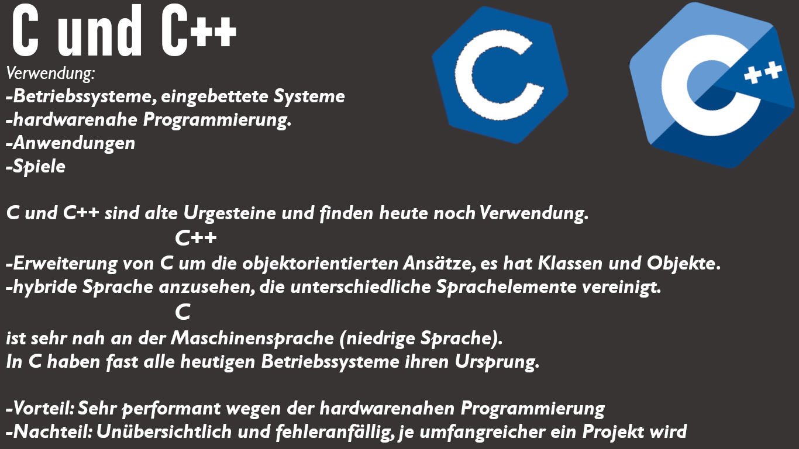
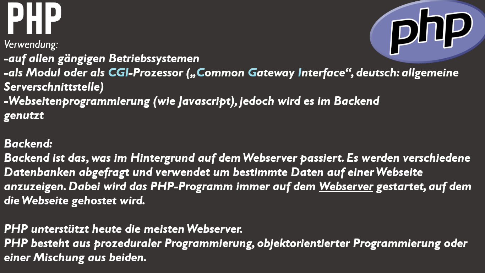
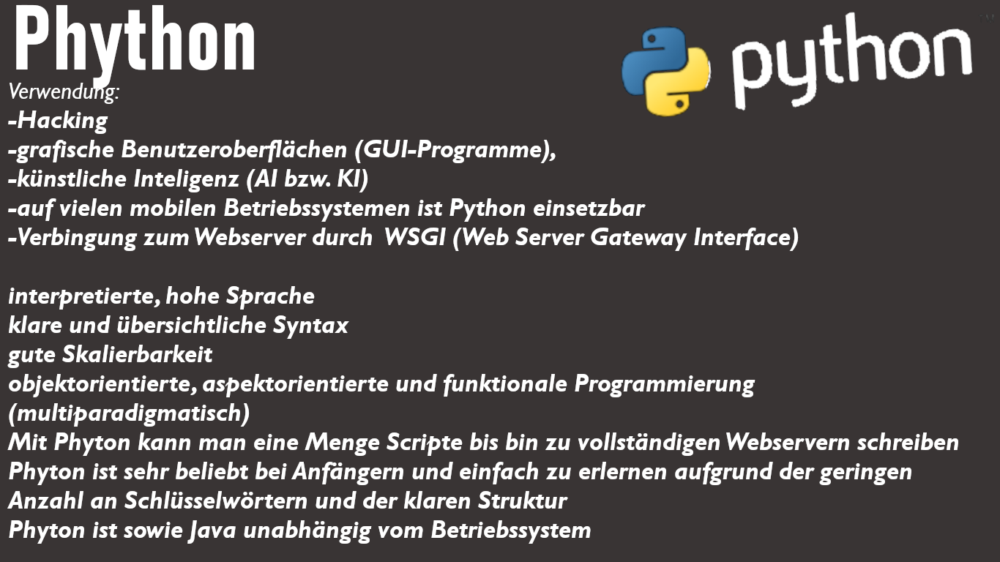
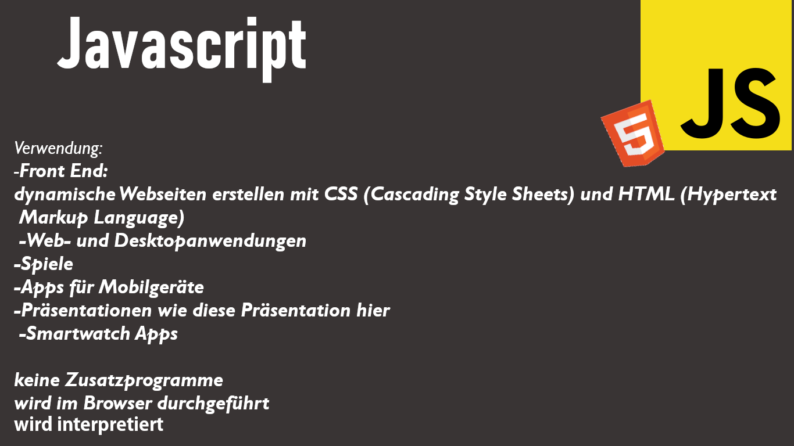
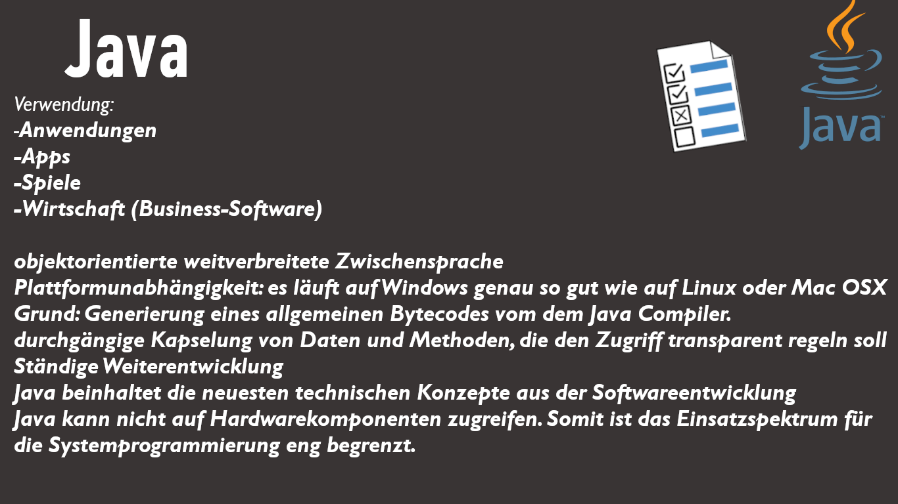
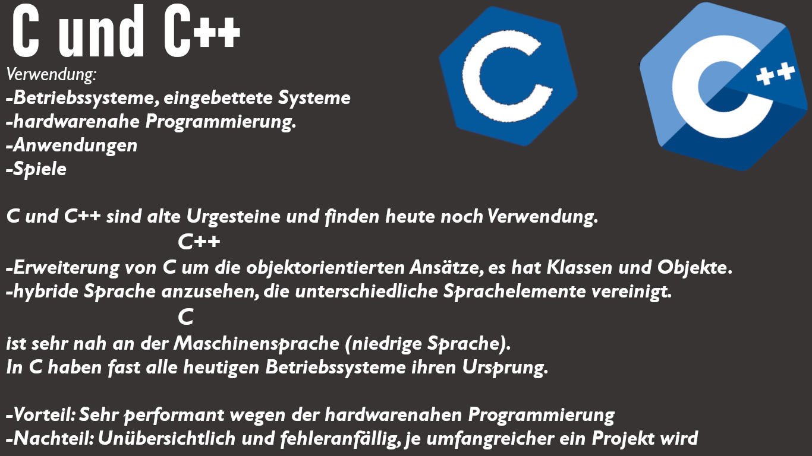
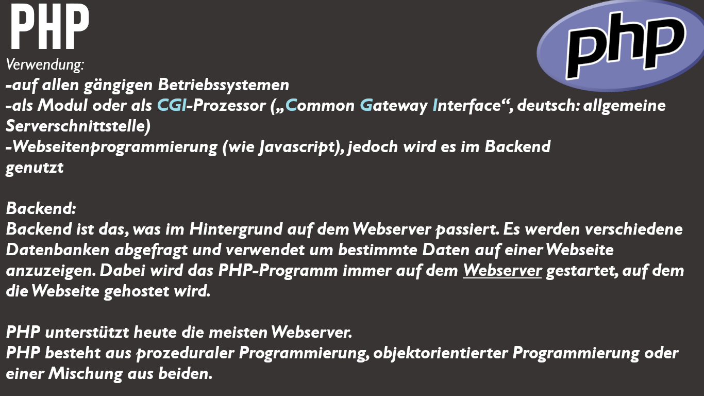
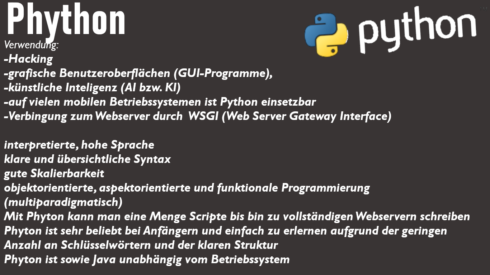
 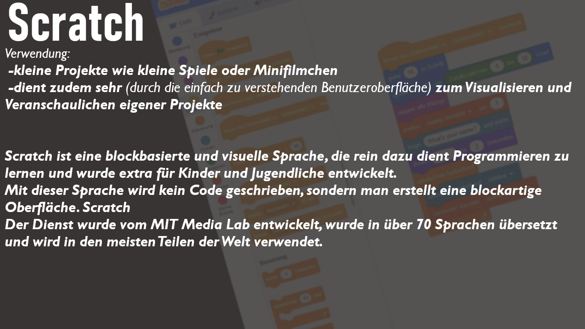
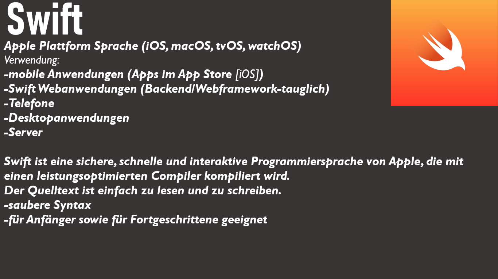
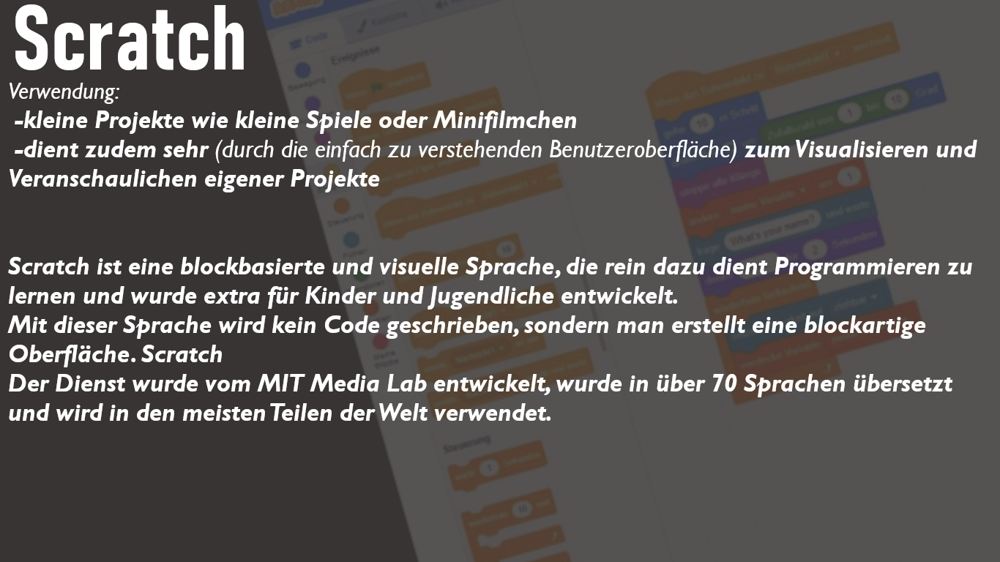
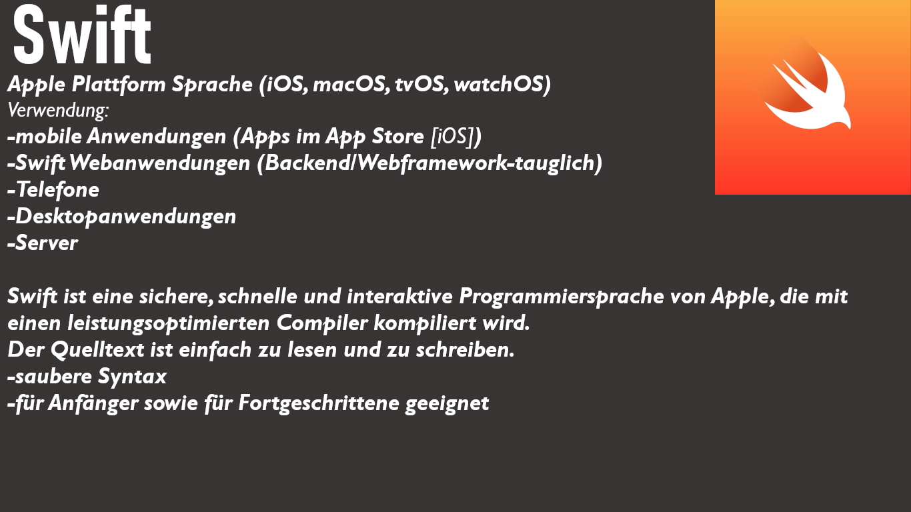
OPTIONAL: Falls ihr euch interessiert, wie sich die Programmiersprachen entwickelt haben bzw. wie bekannt/erfolgreich die Programmiersprachen waren, kann sich dieses Video anschauen 😁